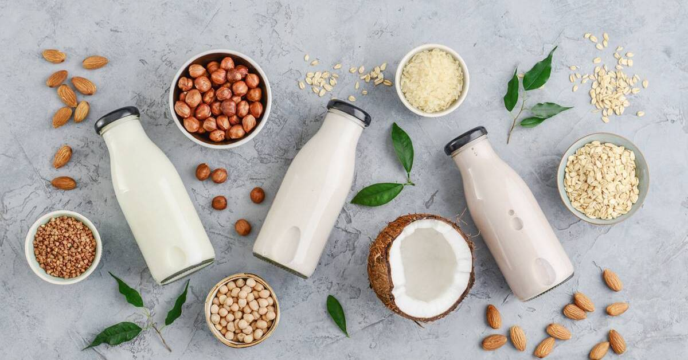

CONG DUNG DAC BIET TU MANGO...!
Sữa chua là một trong những thực phẩm lên men tốt cho hệ tiêu hóa. Sữa chua cung cấp cho cơ thể một lượng lớn lợi khuẩn có tác dụng thúc đẩy tiêu hóa, bảo vệ đường ruột, tăng sức đề kháng. Những người bị đầy hơi, no lâu hoặc táo bón thích hợp thường xuyên sử dụng sữa chua. Sữa thực vật là một loại thức uống không phải là sữa được sản xuất từ chiết xuất thực vật để tạo mùi hương và mùi vị. Sữa thực vật được tiêu thụ như một dạng thay thế cho sữa từ động vật, và thêm vào một lựa chọn thức uống thuần chay với cảm nhận béo ngậy cho vị giác.Xem chi tiet.
SUA HAT LA MOT THUC UONG BO SUNG NHIU KEM CHO BAN..?
Sữa chua là một trong những thực phẩm lên men tốt cho hệ tiêu hóa. Sữa chua cung cấp cho cơ thể một lượng lớn lợi khuẩn có tác dụng thúc đẩy tiêu hóa, bảo vệ đường ruột, tăng sức đề kháng. Những người bị đầy hơi, no lâu hoặc táo bón thích hợp thường xuyên sử dụng sữa chua. Sữa thực vật là một loại thức uống không phải là sữa được sản xuất từ chiết xuất thực vật để tạo mùi hương và mùi vị. Sữa thực vật được tiêu thụ như một dạng thay thế cho sữa từ động vật, và thêm vào một lựa chọn thức uống thuần chay với cảm nhận béo ngậy cho vị giác.Xem chi tiet.
RA MAT AP MOI BAN SUA CHUA TOT FOR U..?
Sữa chua là một trong những thực phẩm lên men tốt cho hệ tiêu hóa. Sữa chua cung cấp cho cơ thể một lượng lớn lợi khuẩn có tác dụng thúc đẩy tiêu hóa, bảo vệ đường ruột, tăng sức đề kháng. Những người bị đầy hơi, no lâu hoặc táo bón thích hợp thường xuyên sử dụng sữa chua. Sữa thực vật là một loại thức uống không phải là sữa được sản xuất từ chiết xuất thực vật để tạo mùi hương và mùi vị. Sữa thực vật được tiêu thụ như một dạng thay thế cho sữa từ động vật, và thêm vào một lựa chọn thức uống thuần chay với cảm nhận béo ngậy cho vị giác.Xem chi tiet.
SUA CHUA CO NHIU CONG DUNG CHO SUC KHOE..?

Sữa chua là một trong những thực phẩm lên men tốt cho hệ tiêu hóa. Sữa chua cung cấp cho cơ thể một lượng lớn lợi khuẩn có tác dụng thúc đẩy tiêu hóa, bảo vệ đường ruột, tăng sức đề kháng. Những người bị đầy hơi, no lâu hoặc táo bón thích hợp thường xuyên sử dụng sữa chua. Sữa thực vật là một loại thức uống không phải là sữa được sản xuất từ chiết xuất thực vật để tạo mùi hương và mùi vị. Sữa thực vật được tiêu thụ như một dạng thay thế cho sữa từ động vật, và thêm vào một lựa chọn thức uống thuần chay với cảm nhận béo ngậy cho vị giác.Xem chi tiet.
SUA CHU KIWI LA SAN PHAM MOI CHO BAN..?
Sữa chua là một trong những thực phẩm lên men tốt cho hệ tiêu hóa. Sữa chua cung cấp cho cơ thể một lượng lớn lợi khuẩn có tác dụng thúc đẩy tiêu hóa, bảo vệ đường ruột, tăng sức đề kháng. Những người bị đầy hơi, no lâu hoặc táo bón thích hợp thường xuyên sử dụng sữa chua. Sữa thực vật là một loại thức uống không phải là sữa được sản xuất từ chiết xuất thực vật để tạo mùi hương và mùi vị. Sữa thực vật được tiêu thụ như một dạng thay thế cho sữa từ động vật, và thêm vào một lựa chọn thức uống thuần chay với cảm nhận béo ngậy cho vị giác.Xem chi tiet.
THAP SANG TRI THUC CUA TRE EM..?
Sữa chua là một trong những thực phẩm lên men tốt cho hệ tiêu hóa. Sữa chua cung cấp cho cơ thể một lượng lớn lợi khuẩn có tác dụng thúc đẩy tiêu hóa, bảo vệ đường ruột, tăng sức đề kháng. Những người bị đầy hơi, no lâu hoặc táo bón thích hợp thường xuyên sử dụng sữa chua. Sữa thực vật là một loại thức uống không phải là sữa được sản xuất từ chiết xuất thực vật để tạo mùi hương và mùi vị. Sữa thực vật được tiêu thụ như một dạng thay thế cho sữa từ động vật, và thêm vào một lựa chọn thức uống thuần chay với cảm nhận béo ngậy cho vị giác.Xem chi tiet.